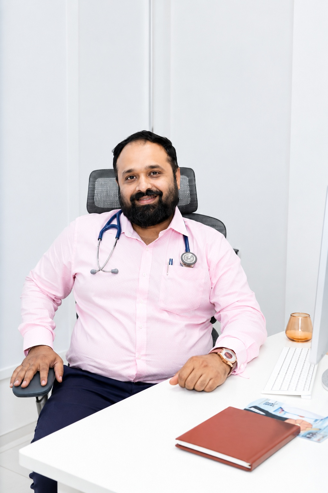
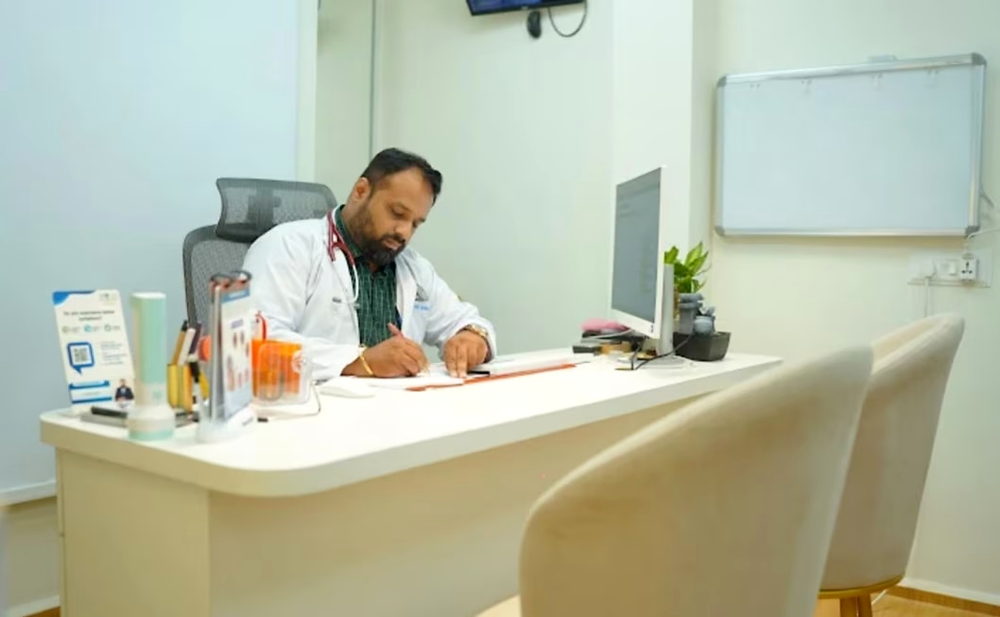
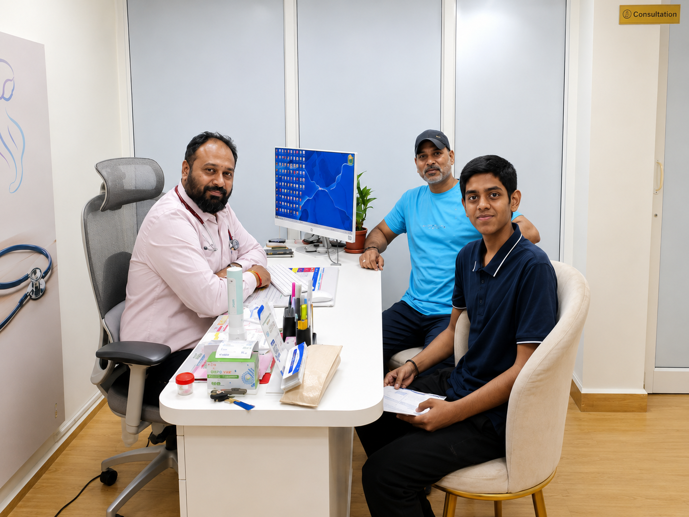

Rheumatology
Consultation and medical care for rheumatological and musculoskeletal concerns.
Dr. Suraj Kodak provides thoughtful, patient-focused care in Internal Medicine, Diabetology and Rheumatology — with an emphasis on accurate diagnosis and long-term health.

Personalized medical care for diabetes, hypertension, thyroid disorders, arthritis, autoimmune conditions and a wide range of internal medicine concerns.


Dr. Suraj A. Kodak is an Internal Medicine specialist with focused expertise in Diabetology and Rheumatology, practicing at Medicos Clinic, Vishrantwadi, Pune.
His approach combines careful clinical evaluation, evidence-based treatment, preventive healthcare and practical guidance to help patients manage their health with confidence.
Comprehensive medical care with a patient-focused approach at Medicos Clinic.
Consultation and medical care for rheumatological and musculoskeletal concerns.
Diabetes consultation, monitoring and long-term management support.
Evaluation, monitoring and ongoing care for high blood pressure.
Medical consultation and follow-up for thyroid-related health concerns.
Comprehensive adult medical consultation and management of general health concerns.
Medical consultation and ongoing support related to stroke care and recovery.
Assessment and medical management of infectious disease concerns.
Consultation and medical care for respiratory diseases and disorders.
Quick answers to help you prepare for your consultation.
Consultation is available for general medical concerns, diabetes, hypertension, thyroid-related problems, rheumatology concerns and other internal medicine needs.
You can call the clinic directly or use the WhatsApp option on the website to enquire about an appointment.
Medicos Clinic is located in Vishrantwadi, Pune. Use the Google Maps link in the Contact section for directions.
Yes. If you have previous prescriptions, investigation reports, scans or medication details relevant to your concern, bringing them can help make the consultation more useful.
Yes. You can call the clinic or contact the clinic through WhatsApp before your visit for appointment-related information.
Follow-up consultation can be discussed with the doctor based on your condition, treatment plan and individual healthcare needs.
Explore the clinic environment, consultation spaces and moments from medical practice.
Understanding symptoms, history and relevant risk factors before planning care.
Treatment decisions guided by clinical knowledge and individual needs.
Follow-up, monitoring and practical lifestyle guidance for chronic conditions.
Medical information explained clearly so patients can participate confidently.
Schedule a consultation with Dr. Suraj Kodak at Medicos Clinic, Vishrantwadi, Pune.
For appointment availability and clinic timings, please call before visiting.